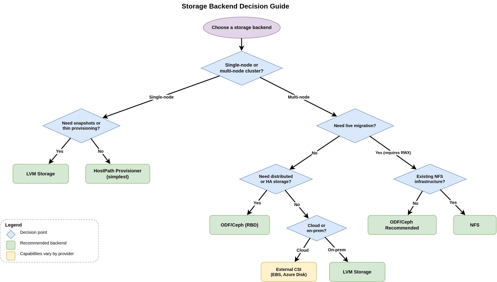

Storage Configuration
Overview
This module covers storage configuration for OpenShift Virtualization, including LVM Storage operator, HostPath Provisioner, and troubleshooting storage issues.
Proper storage configuration is essential for virtual machine deployments, as VMs require persistent storage for their disks and data.
What You’ll Learn
In this section, you will learn:
-
How to install and configure the LVM Storage operator for local disk storage
-
How to deploy OpenShift Data Foundation (ODF) with Ceph for distributed storage
-
How to configure HostPath Provisioner for simple local storage
-
How to set a default storage class for automatic provisioning
-
How to troubleshoot common storage issues
-
Best practices for storage configuration in OpenShift Virtualization
Storage Options for OpenShift Virtualization
OpenShift Virtualization supports various storage backends:
-
LVM Storage: Local disk storage using Logical Volume Manager (covered in this module)
-
HostPath Provisioner: Simple local storage provisioning (covered in this module)
-
OpenShift Data Foundation (ODF): Distributed block and file storage using Ceph (covered in this module)
-
NFS: Network-attached storage
-
External storage providers: AWS EBS, Azure Disk, etc.
This module covers local storage options (LVM Storage, HostPath Provisioner) for single-node deployments and distributed storage (ODF/Ceph) for production multi-node clusters.
Choosing the Right Storage Backend
Use the following diagram to determine which storage backend fits your cluster topology and workload requirements.

The decision depends on three factors: cluster topology (single-node vs multi-node), whether live migration is required (which needs RWX access mode), and what existing storage infrastructure is available. The comparison table below summarizes the capabilities of each backend.
| Storage Backend | Access Modes | Volume Mode | Snapshots | Live Migration | Thin Provisioning | Performance | Use Case |
|---|---|---|---|---|---|---|---|
LVM Storage |
RWO |
Block |
Yes |
No (RWO only) |
Yes |
High (local disk) |
Single-node or bare-metal production with local disks |
HostPath Provisioner |
RWO |
Filesystem |
No |
No (RWO only) |
No |
Moderate |
Dev/test, prototyping, edge, single-node |
ODF/Ceph (RBD) |
RWO, RWX |
Block |
Yes |
Yes (RWX multi-attach) |
Yes |
High (distributed) |
Production multi-node, recommended for VM workloads with live migration |
ODF/Ceph (CephFS) |
RWO, RWX |
Filesystem |
Yes |
Yes (RWX) |
Yes |
High (distributed) |
Production multi-node with live migration |
NFS |
RWO, RWX |
Filesystem |
No |
Yes (RWX) |
Varies |
Moderate (network) |
Shared storage with existing NFS infrastructure |
External CSI |
Varies |
Varies |
Varies |
Varies |
Varies |
Varies |
Cloud deployments (AWS EBS, Azure Disk, etc.) |
| Live migration requires the VM disk to be accessible from both the source and destination nodes during migration. ODF supports this through two paths: Ceph RBD in Block mode (RWX multi-attach, recommended for VM workloads due to higher I/O performance) which allows concurrent access from multiple nodes, and CephFS in Filesystem mode (RWX) which provides shared filesystem access. NFS also provides RWX access. For production clusters requiring live migration, ODF with Ceph RBD is the recommended solution. |
Prerequisites
Before proceeding with the tutorials in this section, ensure you have:
-
OpenShift 4.18+ cluster
-
Cluster admin access
-
At least one spare local disk on cluster nodes
-
Basic understanding of Linux storage concepts (LVM, block devices)
Sections
- Installing LVM Storage Operator
-
Step-by-step guide to install and configure the LVM Storage operator with a local disk.
- Troubleshooting LVM Storage Operator
-
Troubleshooting guide for diagnosing and resolving LVM storage issues.
- OpenShift Data Foundation (ODF) with Ceph Storage
-
Install and configure OpenShift Data Foundation with Ceph storage for production multi-node clusters requiring distributed, scalable storage.
- Local Storage with HostPath Provisioner
-
Configure local storage using the HostPath Provisioner for development, testing, and single-node cluster scenarios.
- Creating and Managing Storage Classes
-
Create and configure StorageClasses for different storage backends and provisioning policies.
- Multi-Disk VM Configuration with Different Storage Classes
-
Configure VMs with multiple disks using different StorageClasses for storage tiering.
- Expanding VM Disk Size (PVC Volume Expansion)
-
Expand VM disk size via PVC volume expansion for both offline and online scenarios.
- CDI Operations: DataVolumes, Imports, and Upload
-
Manage disk image imports, clones, and uploads using the Containerized Data Importer (CDI).
- VM Disk I/O Performance Tuning
-
Tune disk I/O performance for VM workloads with cache modes, I/O threads, and queue settings.
Why Default Storage Class Matters
Setting a default storage class is critical for OpenShift Virtualization:
-
Boot Source Images: DataSource OS images require a default storage class
-
Automatic Provisioning: VMs can be created without explicitly specifying storage
-
Template Support: VM templates work out-of-the-box
-
Simplified Operations: Consistent storage provisioning across the cluster
See Step 5: Set Default StorageClass in the LVM operator guide for details.
Next Steps
After completing this module, you’ll be ready to:
-
Configure networking for your VMs
-
Create and configure virtual machines